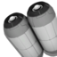
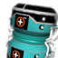
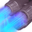
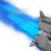
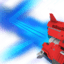
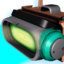

| Gefahrenschutz Exo-Anzug-Umweltschild | 10U | | | | Einfacher Umweltschild.
Der Schutz gegen bestimmte planetare Bedingungen kann durch die Installation von Gefahrenschutz-Einheiten verbessert werden.
Das Gerät wird durch Oxid-Elemente geladen. Funktioniert automatisch. |
| Lebenserhaltung Überlebens-Anzugsenergiepack | 10U | | | | Durch Isotop-Elemente wie Kohlenstoff, Plutonium und Thamium-9 mit Energie versorgtes Lebenserhaltungsgerät.
Um eine ausreichende Versorgung der Lebenserhaltungssysteme zu gewährleisten, MUSS der Nutzer dafür Sorge tragen, dass die Energiezellen immer aktiviert und funktionsfähig sind.
Aufgeladen durch direktes Einfüllen von Isotop-Elementen durch das Exo-Anzug-Inventar des Nutzers. |
| Jetpack Luftschub-Booster | 10U | | | | Suit_Jetpack | => 1 | (+1) | | Suit_Jetpack_Tank | => 3,5 | (+1) |
| Ein Jetpack, das leichtgewichtige Kanister verwendet, um den Nutzer mittels sicherer Stöße neutralisierten Gases kurzzeitig in die Luft zu befördern.
Der Nutzer sollte vor dem Flug den Himmel nach Flugaktivitäten absuchen.
Zum Start  JUMP<> gedrückt halten. JUMP<> gedrückt halten. |
|  | Jetpack-Booster Sigma Luftschub-Begleiteinheit | 30U | | | | Suit_Jetpack_Tank | => 1 | (+1) |
| Das Jetpack verfügt über verlängerte Schubstöße, die dem Nutzer das Erreichen höher gelegener Orte ermöglichen.
Funktioniert automatisch nach dem Bau im Exo-Anzug-Inventar des Nutzers – zusätzlich zur bestehenden Jetpack-Einheit. |
| Jetpack-Booster Tau Luftschub-Begleiteinheit | 60U | | | | Suit_Jetpack_Tank | => 2 | (+2) |
| Das Jetpack verfügt über verlängerte Schubstöße, die dem Nutzer das Erreichen höher gelegener Orte ermöglichen.
Funktioniert automatisch nach dem Bau im Exo-Anzug-Inventar des Nutzers – zusätzlich zur bestehenden Jetpack-Einheit. |
| Jetpack-Booster Theta Luftschub-Begleiteinheit | 90U | | | | Suit_Jetpack_Tank | => 3 | (+3) |
| Das Jetpack verfügt über verlängerte Schubstöße, die dem Nutzer das Erreichen höher gelegener Orte ermöglichen.
Funktioniert automatisch nach dem Bau im Exo-Anzug-Inventar des Nutzers – zusätzlich zur bestehenden Jetpack-Einheit. |
| Belüftungsmembran Sigma Wasseratmungshilfe | 10U | | | | Der Nutzer kann über längere Zeiträume unter Wasser schwimmen.
Absorbiert im Wasser gelöste Gase durch eine Membranschaltvorrichtung, die – sofern der Nutzer einer herkömmlich gegliederten Spezies angehört – über dem Mund oder Atemloch im Gesicht platziert wird.
Funktioniert automatisch nach dem Bau im Exo-Anzug-Inventar des Nutzers. |
| Belüftungsmembran Tau Wasseratmungshilfe | 30U | | | | Bietet eine verbesserte Fähigkeit, über längere Zeiträume unter Wasser zu schwimmen.
Kann mit anderen Belüftungsmembran-Upgrades verwendet werden.
Das Gerät wird durch Oxid-Elemente geladen. Funktioniert automatisch nach dem Bau im Exo-Anzug-Inventar des Nutzers. |
| Belüftungsmembran Theta Wasseratmungshilfe | 60U | | | | Suit_Underwater | => 150 | (+3) |
| Bietet eine verbesserte Fähigkeit, über längere Zeiträume unter Wasser zu schwimmen.
Kann mit anderen Belüftungsmembran-Upgrades verwendet werden.
Das Gerät wird durch Oxid-Elemente geladen. Funktioniert automatisch nach dem Bau im Exo-Anzug-Inventar des Nutzers. |
 | Strahlungsdeflektor Sigma Gefahrenschutz-Einheit | 10U | | | | Suit_Protection_Radiation | => 75 | (+1) |
| Der Nutzer ist gegen Strahlungsschaden geschützt.
Senkt das Risiko für den Nutzer bei der Erkundung von Welten mit erhöhter Strahlung erheblich. Mikrovibrationen steigern die Reflexion elektromagnetischer Wellen und verringern somit die Absorption.
Das Gerät wird durch Oxid-Elemente aufgeladen. Funktioniert automatisch nach dem Bau im Exo-Anzug-Inventar des Nutzers. |
| Strahlungsdeflektor Tau Gefahrenschutz-Einheit | 30U | | | | Suit_Protection_Radiation | => 225 | (+2) |
| Bietet dem Nutzer erhöhten Schutz gegen Strahlungsschaden.
Das Gerät wird durch Oxid-Elemente geladen. Funktioniert automatisch nach dem Bau im Exo-Anzug-Inventar des Nutzers. |
| Strahlungsdeflektor Theta Gefahrenschutz-Einheit | 60U | | | | Suit_Protection_Radiation | => 490 | (+3) |
| Bietet dem Nutzer erhöhten Schutz gegen Strahlungsschaden.
Das Gerät wird durch Oxid-Elemente geladen. Funktioniert automatisch nach dem Bau im Exo-Anzug-Inventar des Nutzers. |
| Toxindämpfer Sigma Gefahrenschutz-Einheit | 10U | | | | Suit_Protection_Toxic | => 75 | (+1) |
| Der Nutzer ist gegen toxische Schäden geschützt.
Reaktive Verbindungen im Dämpfer beseitigen giftige Flüssigkeiten, die auf den Nutzer fallen, und reduzieren somit die Gefahr und das Erstickungsrisiko.
Das Gerät wird durch Oxid-Elemente aufgeladen. Funktioniert automatisch nach dem Bau im Exo-Anzug-Inventar des Nutzers. |
| Toxindämpfer Tau Gefahrenschutz-Einheit | 30U | | | | Suit_Protection_Toxic | => 225 | (+2) |
| Bietet erhöhten Schutz gegen Schaden durch toxischen Regen.
Das Gerät wird durch Oxid-Elemente geladen. Funktioniert automatisch nach dem Bau im Exo-Anzug-Inventar des Nutzers. |
| Toxindämpfer Theta Gefahrenschutz-Einheit | 60U | | | | Suit_Protection_Toxic | => 490 | (+3) |
| Bietet erhöhten Schutz gegen Schaden durch toxischen Regen.
Das Gerät wird durch Oxid-Elemente geladen. Funktioniert automatisch nach dem Bau im Exo-Anzug-Inventar des Nutzers. |
| Wärmeschicht Sigma Gefahrenschutz-Einheit | 10U | | | | Suit_Protection_Cold | => 75 | (+1) |
| Der Nutzer ist auf gefrorenen Welten gegen Schäden durch extreme Kälte geschützt.
Durch den Exo-Anzug des Nutzers gefädelte Wärmekapillaren verteilen flüssiges Calidium gleichmäßig, um eine angenehme Körpertemperatur zu gewährleisten.
Das Gerät wird durch Oxid-Elemente aufgeladen. Funktioniert automatisch nach dem Bau im Exo-Anzug-Inventar des Nutzers. |
| Wärmeschicht Tau Gefahrenschutz-Einheit | 30U | | | | Suit_Protection_Cold | => 225 | (+2) |
| Länger andauernder Schutz gegen Schäden durch extreme Kälte auf gefrorenen Welten.
Im Anzug des Nutzers kommen tiefer eingebettete Wärmekapillaren zum Einsatz, die das wärmeerzeugende Calidium aufnehmen und den Verlust thermaler Energie minimieren.
Das Gerät wird durch Oxid-Elemente aufgeladen. Funktioniert automatisch nach dem Bau im Exo-Anzug-Inventar des Nutzers. |
| Wärmeschicht Theta Gefahrenschutz-Einheit | 60U | | | | Suit_Protection_Cold | => 490 | (+3) |
| Noch stärker verbesserter Schutz gegen Schäden durch extreme Kälte auf gefrorenen Welten.
Die Zirkulation des flüssigen Calidiums durch die Anzugkapillaren wird von einem zentralen Temperatursteuerungschip überwacht und modifiziert, was eine höhere Effizienz und präzisere Entlastung erlaubt.
Das Gerät wird durch Oxid-Elemente aufgeladen. Funktioniert automatisch nach dem Bau im Exo-Anzug-Inventar des Nutzers. |
| Kühlmittelnetzwerk Sigma Gefahrenschutz-Einheit | 10U | | | | Suit_Protection_Heat | => 75 | (+1) |
| Der Nutzer ist auf sengend heißen Welten gegen Schäden durch extreme Hitze geschützt.
Lindert intensive atmosphärische und solare Hitze mithilfe eines gefädelten Hautverteilungsnetzwerks aus flüssigem Frenium.
Das Gerät wird durch Oxid-Elemente aufgeladen. Funktioniert automatisch nach dem Bau im Exo-Anzug-Inventar des Nutzers. |
| Kühlmittelnetzwerk Tau Gefahrenschutz-Einheit | 30U | | | | Suit_Protection_Heat | => 225 | (+2) |
| Bietet verbesserten Schutz auf sengend heißen Welten gegen Schäden durch extreme Hitze.
Das Gerät wird durch Oxid-Elemente geladen. Funktioniert automatisch nach dem Bau im Exo-Anzug-Inventar des Nutzers. |
| Kühlmittelnetzwerk Theta Gefahrenschutz-Einheit | 60U | | | | Suit_Protection_Heat | => 490 | (+3) |
| Bietet verbesserten Schutz auf sengend heißen Welten gegen Schäden durch extreme Hitze.
Das Gerät wird durch Oxid-Elemente geladen. Funktioniert automatisch nach dem Bau im Exo-Anzug-Inventar des Nutzers. |
| Schildverstärkung Sigma Schildkinetik-Begleiteinheit | 30U | | | | Suit_Armour_Shield_Strength | => 0,25 | (+1) |
| Schilddauer und Ladungskapazität werden erhöht.
Schützt den Anzug des Nutzers mit einer verlängerten Barriere gegen viele Arten schädlicher Einflüsse.
Funktioniert automatisch nach dem Bau im Exo-Anzug-Inventar des Nutzers. |
| Schildverstärkung Tau Schildkinetik-Begleiteinheit | 60U | | | | Suit_Armour_Shield_Strength | => 0,5 | (+2) |
| Schilddauer und Ladungskapazität werden weiter erhöht.
Wehrt Laser, Projektile und die Angriffe wütender Kreaturen mit einer Effizienz ab, die der Nutzer in gewalttätigen Begegnungen positiv bemerken wird.
Funktioniert automatisch nach dem Bau im Exo-Anzug-Inventar des Nutzers. |
| Schildverstärkung Theta Schildkinetik-Begleiteinheit | 90U | | | | Suit_Armour_Shield_Strength | => 0,75 | (+3) |
| Schilddauer und Ladungskapazität werden weiter erhöht.
Wehrt Laser, Projektile und die Angriffe wütender Kreaturen mit einer Effizienz ab, die der Nutzer in gewalttätigen Begegnungen positiv bemerken wird.
Funktioniert automatisch nach dem Bau im Exo-Anzug-Inventar des Nutzers. |
| Ausdauersteigerung Sigma Erschöpfungsdämpfersystem | 50U | | | | Suit_Stamina_Strength | => 0,4 | (+1) |
| Der Nutzer kann über längere Zeiträume rennen.
Das System enthält einen schmerzfreien Wirbelsäuleneinstich, einen Einstich in die Hirnhaut und ein körperliches Chemikalienverteilungsverfahren. Neutralisiert die Bildung von Milchsäure im Körper des Nutzers in Phasen erhöhter Aktivität.
Funktioniert automatisch nach dem Bau im Exo-Anzug-Inventar des Nutzers. |
| Ausdauersteigerung Tau Erschöpfungsdämpfersystem | 100U | | | | Suit_Stamina_Strength | => 0,5 | (+2) |
| Erhöht die Fähigkeit des Nutzers, über längere Zeiträume zu rennen.
Kann mit anderen Ausdauersteigerung-Upgrades verwendet werden.
Funktioniert automatisch nach dem Bau im Exo-Anzug-Inventar des Nutzers. |
| Ausdauersteigerung Theta Erschöpfungsdämpfersystem | 150U | | | | Suit_Stamina_Strength | => 0,6 | (+3) |
| Erhöht die Fähigkeit des Nutzers, über längere Zeiträume zu rennen.
Kann mit anderen Ausdauersteigerung-Upgrades verwendet werden.
Funktioniert automatisch nach dem Bau im Exo-Anzug-Inventar des Nutzers. |
| Lebenserhaltungsmodul Sigma Lebenserhaltung-Begleiteinheit | 50U | | | | Erhöht die verfügbare Energie in den Lebenserhaltungssystemen des Nutzers.
Ermöglicht längere Planetenerkundungen. |
| Lebenserhaltungsmodul Tau Lebenserhaltung-Begleiteinheit | 150U | | | | Erhöht die verfügbare Energie in den Lebenserhaltungssystemen des Nutzers.
Ermöglicht längere Planetenerkundungen. |
|  | Gesundheitsmodul Sigma Exo-Anzug-Begleiteinheit | 30U | | | | Suit_Armour_Health | => 1 | (+1) |
| Verbessert die Gesundheit des Nutzers, sobald die Primärsysteme ausgefallen sind.
Wird automatisch verbraucht, wenn Lebenserhaltungs-, Schild- und Gefahrenschutzsysteme offline sind. |
| Gesundheitsmodul Tau Exo-Anzug-Begleiteinheit | 60U | | | | Suit_Armour_Health | => 1 | (+2) |
| Verbessert die Gesundheit des Nutzers, sobald die Primärsysteme ausgefallen sind.
Wird automatisch verbraucht, wenn Lebenserhaltungs-, Schild- und Gefahrenschutzsysteme offline sind. |
| Gesundheitsmodul Theta Exo-Anzug-Begleiteinheit | 120U | | | | Suit_Armour_Health | => 1 | (+3) |
| Verbessert die Gesundheit des Nutzers, sobald die Primärsysteme ausgefallen sind.
Wird automatisch verbraucht, wenn Lebenserhaltungs-, Schild- und Gefahrenschutzsysteme offline sind. |
| Phasenstrahler Raumschiff-Lasergerät | 5U | | | | Ship_Weapons_Lasers | => 1 | (+1) | | Ship_Weapons_Lasers_HeatTime | => 0,2 | (+1) | | Ship_Weapons_Lasers_Damage | => 2,5 | (+1) |
| Raumfahrer-Strahlenwaffe und Asteroiden-Bergbaugerät.
Der Nutzer wird daran erinnert, dass zum Aufladen des Gerätes Isotop-Elemente erforderlich sind.
Mit  SHIPFIRE<> aktivieren. SHIPFIRE<> aktivieren. |
| Phasenkühlmittel Sigma Phasenstrahler-Begleiteinheit | 20U | | | | Ship_Weapons_Lasers_HeatTime | => 1,5 | (+1) |
| Die Abklingzeiten des Phasenstrahler-Lasers werden erheblich reduziert.
Funktioniert automatisch nach dem Bau im Raumschiff-Inventar des Nutzers. |
| Phasenkühlmittel Tau Phasenstrahler-Begleiteinheit | 40U | | | | Ship_Weapons_Lasers_HeatTime | => 2 | (+2) |
| Die Abklingzeiten des Phasenstrahler-Lasers werden erheblich reduziert.
Funktioniert automatisch nach dem Bau im Raumschiff-Inventar des Nutzers. |
| Phasenkühlmittel Theta Phasenstrahler-Begleiteinheit | 60U | | | | Ship_Weapons_Lasers_HeatTime | => 2,5 | (+3) |
| Die Abklingzeiten des Phasenstrahler-Lasers werden erheblich reduziert.
Funktioniert automatisch nach dem Bau im Raumschiff-Inventar des Nutzers. |
| Strahlaufprall Sigma Phasenstrahler-Begleiteinheit | 20U | | | | Ship_Weapons_Lasers_Damage | => 0,4 | (+2) |
| Der Phasenstrahler zerstört Raumschiff- und Asteroidenziele schneller.
Funktioniert automatisch nach dem Bau im Raumschiff-Inventar des Nutzers. |
| Strahlaufprall Tau Phasenstrahler-Begleiteinheit | 40U | | | | Ship_Weapons_Lasers_Damage | => 0,7 | (+3) |
| Der Phasenstrahler zerstört Raumschiff- und Asteroidenziele schneller.
Funktioniert automatisch nach dem Bau im Raumschiff-Inventar des Nutzers. |
| Strahlaufprall Theta Phasenstrahler-Begleiteinheit | 60U | | | | Ship_Weapons_Lasers_Damage | => 1 | (+4) |
| Der Phasenstrahler zerstört Raumschiff- und Asteroidenziele schneller.
Funktioniert automatisch nach dem Bau im Raumschiff-Inventar des Nutzers. |
| Photonenkanone Raumschiff-Projektilwaffe | 10U | | | | Ship_Weapons_Guns | => 1 | (+1) | | Ship_Weapons_Guns_Damage | => 1 | (+1) | | Ship_Weapons_Guns_HeatTime | => 6 | (+1) | | Ship_Weapons_Guns_Rate | => 7 | (+1) | | Ship_Weapons_Guns_ClipSize | => 500 | (+1) |
| Waffe mit großer Zerstörungskraft, die die schnelle Zerstörung anderer Schiffe ermöglicht.
Mit  SHIPFIRE<> aktivieren. SHIPFIRE<> aktivieren. |
| Fortgeschrittene Kühlung Sigma Photonenkanonen-Begleiteinheit | 10U | | | | Ship_Weapons_Guns_HeatTime | => 1,25 | (+1) |
| Die Abklingzeiten der Photonenkanone werden erheblich reduziert.
Die Zerstörung von Schiff zu Schiff wird durch eine reduzierte Unterbrechung der Photonenentladung zu einem angenehmeren Unterfangen.
Funktioniert automatisch nach dem Bau im Raumschiff-Inventar des Nutzers. |
| Fortgeschrittene Kühlung Tau Photonenkanonen-Begleiteinheit | 20U | | | | Ship_Weapons_Guns_HeatTime | => 1,5 | (+2) |
| Die Abklingzeiten der Photonenkanone werden erheblich reduziert.
Die Zerstörung von Schiff zu Schiff wird durch eine reduzierte Unterbrechung der Photonenentladung zu einem angenehmeren Unterfangen.
Funktioniert automatisch nach dem Bau im Raumschiff-Inventar des Nutzers. |
| Fortgeschrittene Kühlung Theta Photonenkanonen-Begleiteinheit | 30U | | | | Ship_Weapons_Guns_HeatTime | => 1,75 | (+3) |
| Die Abklingzeiten der Photonenkanone werden erheblich reduziert.
Die Zerstörung von Schiff zu Schiff wird durch eine reduzierte Unterbrechung der Photonenentladung zu einem angenehmeren Unterfangen.
Funktioniert automatisch nach dem Bau im Raumschiff-Inventar des Nutzers. |
| Beschleunigtes Feuern Sigma Photonenkanonen-Begleiteinheit | 15U | | | | Ship_Weapons_Guns_Rate | => 1,2 | (+1) | | Ship_Weapons_Guns_Damage | => 0,92 | (+1) |
| Die Feuerrate der Photonenkanone wird erhöht.
Schnellfeuer-Modifikation, die Schadens-, Eliminierungs- und Zerstörungspotenzial bei anvisierten Zielen erhöht.
Funktioniert automatisch nach dem Bau im Raumschiff-Inventar des Nutzers. |
| Beschleunigtes Feuern Tau Photonenkanonen-Begleiteinheit | 30U | | | | Ship_Weapons_Guns_Rate | => 1,3 | (+2) | | Ship_Weapons_Guns_Damage | => 0,91 | (+1) |
| Die Feuerrate der Photonenkanone wird erhöht.
Schnellfeuer-Modifikation, die Schadens-, Eliminierungs- und Zerstörungspotenzial bei anvisierten Zielen erhöht.
Funktioniert automatisch nach dem Bau im Raumschiff-Inventar des Nutzers. |
| Beschleunigtes Feuern Theta Photonenkanonen-Begleiteinheit | 60U | | | | Ship_Weapons_Guns_Rate | => 1,4 | (+3) | | Ship_Weapons_Guns_Damage | => 0,9 | (+1) |
| Die Feuerrate der Photonenkanone wird erhöht.
Schnellfeuer-Modifikation, die Schadens-, Eliminierungs- und Zerstörungspotenzial bei anvisierten Zielen erhöht.
Funktioniert automatisch nach dem Bau im Raumschiff-Inventar des Nutzers. |
| Kanonenschaden Sigma Photonenkanonen-Begleiteinheit | 20U | | | | Ship_Weapons_Guns_Damage | => 0,5 | (+1) |
| Die Feuerrate der Photonenkanone wird erhöht.
Funktioniert automatisch nach dem Bau im Raumschiff-Inventar des Nutzers. |
| Kanonenschaden Tau Photonenkanonen-Begleiteinheit | 40U | | | | Ship_Weapons_Guns_Damage | => 1 | (+2) |
| Die Feuerrate der Photonenkanone wird erhöht.
Funktioniert automatisch nach dem Bau im Raumschiff-Inventar des Nutzers. |
| Kanonenschaden Theta Photonenkanonen-Begleiteinheit | 80U | | | | Ship_Weapons_Guns_Damage | => 1,5 | (+3) |
| Die Feuerrate der Photonenkanone wird erhöht.
Funktioniert automatisch nach dem Bau im Raumschiff-Inventar des Nutzers. |
| Deflektorschild Schutz für Raumschiffsrumpf | 5U | | | | Ship_Armour_Shield | => 1 | (+1) | | Ship_Armour_Shield_Strength | => 0 | (+1) |
| Dieser Energieschild schützt das Schiff vor Laserfeuer, heranfliegenden Projektilen und Zusammenstößen mit Weltraumschrott.
Der Nutzer wird daran erinnert, dass zum Aufladen des Gerätes Oxid-Elemente erforderlich sind.
Funktioniert automatisch nach dem Bau im Raumschiff-Inventar des Nutzers. |
| Ablenkungssteigerung Sigma Deflektorschild-Begleiteinheit | 60U | | | | Ship_Armour_Shield_Strength | => 0,25 | (+1) |
| Der Energieschild des Raumschiffs wird verstärkt.
Gewährt zusätzlichen Schutz vor Laserfeuer, heranfliegenden Projektilen und Zusammenstößen mit Weltraumschrott.
Funktioniert automatisch nach dem Bau im Raumschiff-Inventar des Nutzers. |
| Ablenkungssteigerung Tau Deflektorschild-Begleiteinheit | 80U | | | | Ship_Armour_Shield_Strength | => 0,5 | (+1) |
| Der Energieschild des Raumschiffs wird verstärkt.
Gewährt zusätzlichen Schutz vor Laserfeuer, heranfliegenden Projektilen und Zusammenstößen mit Weltraumschrott.
Funktioniert automatisch nach dem Bau im Raumschiff-Inventar des Nutzers. |
| Ablenkungssteigerung Theta Deflektorschild-Begleiteinheit | 100U | | | | Ship_Armour_Shield_Strength | => 0,7 | (+1) |
| Der Energieschild des Raumschiffs wird verstärkt.
Gewährt zusätzlichen Schutz vor Laserfeuer, heranfliegenden Projektilen und Zusammenstößen mit Weltraumschrott.
Funktioniert automatisch nach dem Bau im Raumschiff-Inventar des Nutzers. |
| Impulsantrieb Raumschiffsflug-Booster | 10U | | | | Ship_PulseDrive | => 1 | (+1) | | Ship_PulseDrive_MiniJumpFuelSpending | => 1 | (+1) | | Ship_Boost | => 100 | (+1) | | Ship_Maneuverability | => 1 | (+1) |
| Raumflug-Antrieb, Booster und bei Bedarf auch Impulssprünge durch lokale Systeme.
Der Nutzer wird daran erinnert, dass zum Laden des Impulsantriebs Thamium-9 erforderlich ist.
Zum Aktivieren des Impulssprungs  ROLLLEFT<> und ROLLLEFT<> und  ROLLRIGHT<> gleichzeitig gedrückt halten.
Mit ROLLRIGHT<> gleichzeitig gedrückt halten.
Mit  BOOST<> den Geschwindigkeitsschub während des Flugs aktivieren. BOOST<> den Geschwindigkeitsschub während des Flugs aktivieren. |
| Impulsdüse Sigma Impulsantrieb-Begleiteinheit | 50U | | | | Ship_PulseDrive_MiniJumpFuelSpending | => -0,25 | (+1) | | Ship_Boost | => 10 | (+1) | | Ship_Maneuverability | => 1 | (+1) |
| Bietet verbesserte Manövrierfähigkeit und längere Boosts bei Raumflügen.
Verbessert außerdem den Thamium-9-Verbrauch des Nutzers. |
| Impulsdüse Tau Impulsantrieb-Begleiteinheit | 80U | | | | Ship_PulseDrive_MiniJumpFuelSpending | => -0,25 | (+1) | | Ship_Boost | => 20 | (+1) | | Ship_Maneuverability | => 1 | (+1) |
| Bietet verbesserte Manövrierfähigkeit und längere Boosts bei Raumflügen.
Verbessert außerdem den Thamium-9-Verbrauch des Nutzers. |
|  | Hyperantrieb Lichtgeschwindigkeit-Warp-Antrieb | 10U | | | | Ship_Hyperdrive | => 1 | (+1) | | Ship_Hyperdrive_JumpDistance | => 100 | (+1) |
| Hyperlichtantrieb, der einem Raumschiff Warp-Geschwindigkeit und Sprünge zwischen benachbarten Systemen ermöglicht.
Es wird empfohlen, dass der Nutzer über die Galaktische Karte auf die Hyperantrieb-Systeme zugreift. |
| Warp-Reaktor Sigma Hyperantrieb-Begleiteinheit | 30U | | | | Ship_Hyperdrive_JumpDistance | => 200 | (+1) |
| Der Hyperantrieb verfügt über stabilere Erkundungsfähigkeiten in den Tiefen des Weltraums sowie über die Möglichkeit, zu Sternen zu springen, die bislang außer Reichweite lagen.
Bei Reisen in die Tiefen des Weltraums ohne Begleitung bitte Vorsicht walten lassen.
Es wird empfohlen, dass der Nutzer über die Galaktische Karte auf die Hyperantrieb-Systeme zugreift. |
| Warp-Reaktor Tau Hyperantrieb-Begleiteinheit | 50U | | | | Ship_Hyperdrive_JumpDistance | => 400 | (+1) |
| Der Hyperantrieb profitiert von hochentwickelter Fusionstechnologie, die dem Raumschiff höhere Warp-Geschwindigkeiten und -Intensitäten ermöglicht. Das Schiff des Nutzers kann tiefer in den Weltraum springen und weiter entfernte Planetensysteme anfliegen.
Die Warp-Kernleistung wurde gedrosselt, um eine sichere Kernschmelze, unkontrollierte Thamium-9-Fusion und Tod zu vermeiden.
Es wird empfohlen, dass der Nutzer über die Galaktische Karte auf die Hyperantrieb-Systeme zugreift. |
| Warp-Reaktor Theta Hyperantrieb-Begleiteinheit | 80U | | | | Ship_Hyperdrive_JumpDistance | => 800 | (+1) |
| Ungedrosselte, aber stabilisierte Fusionssysteme werden in den Hyperantrieb des Nutzers integriert. Ermöglicht dem Raumschiff noch weitere Sprungdistanzen in die Tiefen des Weltraums.
Unannehmlichkeiten für den Nutzer aufgrund der intensiven Wärmeentwicklung werden durch die Verknüpfung mit den bestehenden Kühlsystemen des Schiffes limitiert.
Es wird empfohlen, dass der Nutzer über die Galaktische Karte auf die Hyperantrieb-Systeme zugreift. |
| Startschubdüse Vertikales Startsystem | 5U | | | | Ship_Launcher | => 1 | (+1) | | Ship_Launcher_TakeOffCost | => 150 | (+1) |
| Wichtige Ausrüstung zum Starten und Landen.
Der Nutzer wird daran erinnert, dass zum Aufladen der Schubdüse Plutonium erforderlich ist. Für die Startprozeduren sind vor der Aktivierung ausreichende Treibstoff-Levels nötig.
Zum Abheben vom Planeten  SHIPLAUNCH<> gedrückt halten. SHIPLAUNCH<> gedrückt halten.
 BOOST<> gedrückt halten, um den Geschwindigkeitsschub während des Flugs zu aktivieren. BOOST<> gedrückt halten, um den Geschwindigkeitsschub während des Flugs zu aktivieren. |
| Photonix-Kern Impulsantrieb-Begleiteinheit | 50U | | | | Ship_PulseDrive_MiniJumpFuelSpending | => -0,25 | (+1) | | Ship_Boost | => 10 | (+1) | | Ship_Maneuverability | => 1 | (+1) |
| Bietet verbesserte Manövrierfähigkeit und längere Boosts bei Raumflügen.
Verbessert außerdem den Thamium-9-Verbrauch des Nutzers. |
| Bergbaustrahl Mineralien-Extraktionslaser | 10U | | | | Weapon_Laser | => 1 | (+1) | | Weapon_Laser_Mining_Speed | => 1 | (+1) | | Weapon_Laser_HeatTime | => 6 | (+1) | | Weapon_Laser_Mining_Damage | => 3 | (+1) | | Weapon_Laser_ReloadTime | => 1 | (+1) | | Weapon_Laser_Damage | => 2 | (+1) |
| Präzises Laserstrahl-Bergbauwerkzeug, das mit Isotop-Elementen, wie Kohlenstoff, aufgeladen wird.
Setzt Elemente innerhalb von planetaren Felsformationen und Vegetation frei und sammelt sie. Der Einsatz kann die Aufmerksamkeit von Wächtern erregen.
Mit  ATTACK<> aktivieren. ATTACK<> aktivieren. |
 | Railschuss-Adapter Bergbaustrahl-Begleiteinheit | 50U | | | | Weapon_Laser_HeatTime | => 0,5 | (+1) | | Weapon_Laser_Damage | => 4 | (+5) | | Weapon_Laser_ReloadTime | => 1,2 | (+1) | | Weapon_Laser_Mining_Damage | => 10 | (+1) |
| Der Blitzwerfer fügt Zielen sofortigen Schaden zu.
Der Plasma-Ladevorgang erzeugt einen Bogen aus ionisiertem Gas, der Projektile mit großer Geschwindigkeit antreibt. Der Nutzer kann simultan mit dem Betätigen des Auslösers das Ergebnis der Zerstörung beobachten.
Funktioniert automatisch nach dem Bau im Multiwerkzeug-Inventar des Nutzers. |
| Strahlenfokus Sigma Bergbaustrahl-Begleiteinheit | 15U | | | | Weapon_Laser_Mining_Damage | => 1 | (+1) |
| Schnellere Bergbaustrahl-Prozesse bei ressourcenreichen Materialien.
Der Nutzer verfügt über einen schnelleren Elementabbau aus Kristallen, Felsen und planetarer Vegetation.
Funktioniert automatisch nach dem Bau im Multiwerkzeug-Inventar des Nutzers. |
| Strahlenfokus Tau Bergbaustrahl-Begleiteinheit | 30U | | | | Weapon_Laser_Mining_Damage | => 2 | (+2) |
| Schnellere Bergbaustrahl-Prozesse bei ressourcenreichen Materialien.
Der Nutzer verfügt über einen schnelleren Elementabbau aus Kristallen, Felsen und planetarer Vegetation.
Funktioniert automatisch nach dem Bau im Multiwerkzeug-Inventar des Nutzers. |
| Strahlenfokus Theta Bergbaustrahl-Begleiteinheit | 60U | | | | Weapon_Laser_Mining_Damage | => 3 | (+3) |
| Schnellere Bergbaustrahl-Prozesse bei ressourcenreichen Materialien.
Der Nutzer verfügt über einen schnelleren Elementabbau aus Kristallen, Felsen und planetarer Vegetation.
Funktioniert automatisch nach dem Bau im Multiwerkzeug-Inventar des Nutzers. |
| Strahlintensivierer Sigma Bergbaustrahl-Begleiteinheit | 20U | | | | Weapon_Laser_Mining_Speed | => 0,9 | (+1) | | Weapon_Laser_Mining_Damage | => 1,05 | (+1) |
| Der Bergbaustrahl-Laser wird verstärkt, um die Zerstörung des Terrains zu beschleunigen.
Funktioniert automatisch nach dem Bau im Multiwerkzeug-Inventar des Nutzers. |
| Strahlintensivierer Tau Bergbaustrahl-Begleiteinheit | 20U | | | | Weapon_Laser_Mining_Speed | => 0,85 | (+2) | | Weapon_Laser_Mining_Damage | => 1,1 | (+2) |
| Der Bergbaustrahl-Laser wird verstärkt, um die Zerstörung des Terrains zu beschleunigen.
Funktioniert automatisch nach dem Bau im Multiwerkzeug-Inventar des Nutzers. |
| Strahlintensivierer Theta Bergbaustrahl-Begleiteinheit | 20U | | | | Weapon_Laser_Mining_Speed | => 0,8 | (+3) | | Weapon_Laser_Mining_Damage | => 1,15 | (+3) |
| Der Bergbaustrahl-Laser wird verstärkt, um die Zerstörung des Terrains zu beschleunigen.
Funktioniert automatisch nach dem Bau im Multiwerkzeug-Inventar des Nutzers. |
| Strahl-Kühlmittelsystem Sigma Bergbaustrahl-Begleiteinheit | 15U | | | | Weapon_Laser_HeatTime | => 1,3 | (+1) |
| Der Bergbaustrahl wurde modifiziert, um die Zeit zwischen Abklingzeiten zu verlängern.
Ermöglicht es dem Nutzer, Bergbau-Vorgänge bei erheblich reduzierter Hitze und mit weniger Unterbrechungen durchzuführen.
Funktioniert automatisch nach dem Bau im Multiwerkzeug-Inventar des Nutzers. |
| Strahl-Kühlmittelsystem Tau Bergbaustrahl-Begleiteinheit | 40U | | | | Weapon_Laser_HeatTime | => 1,6 | (+2) |
| Verlängert die Zeit zwischen den Abklingzeiten des Bergbaustrahls weiter.
Zusätzliche Kühlschleifen mit flüssigem Frenium um die Kristall-Beschleunigungskammer des Lasers herum beseitigen Symptome der Überhitzung schnell und effizient.
Funktioniert automatisch nach dem Bau im Multiwerkzeug-Inventar des Nutzers. |
| Strahl-Kühlmittelsystem Theta Bergbaustrahl-Begleiteinheit | 60U | | | | Weapon_Laser_HeatTime | => 1,8 | (+3) |
| Ermöglicht den längsten Zeitraum des Elementabbaus ohne Unterbrechungen für alle aktuellen Bergbaustrahl-Technologien.
Zusätzliche Frenium-Kühlkapillaren befördern überschüssige Hitze zuverlässig aus der Kristall-Beschleunigungskammer des Lasers und sorgen so für eine minimale Unterbrechung des Abbauprozesses.
Funktioniert automatisch nach dem Bau im Multiwerkzeug-Inventar des Nutzers. |
| Kampfverstärker Sigma Bergbaustrahl-Begleiteinheit | 15U | | | | Weapon_Laser_Damage | => 0,5 | (+1) |
| Der Laserschaden des Bergbaustrahls im Kampf wird erhöht.
Präzisionsoptik und Strahlenverstärkung verbessern die bestehende Laserfunktion und ermöglichen dem Nutzer effizientere Angriffe.
Funktioniert automatisch nach dem Bau im Multiwerkzeug-Inventar des Nutzers. |
| Kampfverstärker Tau Bergbaustrahl-Begleiteinheit | 40U | | | | Weapon_Laser_Damage | => 1 | (+2) |
| Erhöht den Laserschaden durch den Bergbaustrahl im Kampf zusätzlich.
Die Fokussierung der Laseroptik ermöglicht in Augenblicken der Gewalt effektiveren Strahlenschaden.
Funktioniert automatisch nach dem Bau im Multiwerkzeug-Inventar des Nutzers. |
| Kampfverstärker Theta Bergbaustrahl-Begleiteinheit | 60U | | | | Weapon_Laser_Damage | => 1,5 | (+3) |
| Verleiht dem Bergbaustrahl-Laser deutlich mehr Zerstörungskraft im Kampfeinsatz.
Erweitert die Kondensatorspeicher des Bergbaustrahls um Photonenagitationstechnologie.
Funktioniert automatisch nach dem Bau im Multiwerkzeug-Inventar des Nutzers. |
| Kampfverstärker Omega Bergbaustrahl-Begleiteinheit | 80U | | | | Weapon_Laser_Damage | => 2 | (+4) |
| Die Angriffsfähigkeiten des Bergbaustrahls werden auf ihr maximales Potenzial verbessert.
Der Nutzer profitiert von der verschwindend geringen Überlebensrate potenzieller Ziele, die es ihm ermöglicht, die Bedingungen einer gewaltlosen Planetenerkundung schneller wieder herbeizuführen.
Funktioniert automatisch nach dem Bau im Multiwerkzeug-Inventar des Nutzers. |
| Blitzwerfer Energie-Projektilwaffe | 10U | | | | Weapon_Projectile | => 1 | (+1) | | Weapon_Projectile_Damage | => 8 | (+1) | | Weapon_Projectile_Range | => 1500 | (+1) | | Weapon_Projectile_Rate | => 8 | (+1) | | Weapon_Projectile_ClipSize | => 48 | (+1) | | Weapon_Projectile_Recoil | => 25 | (+1) | | Weapon_Projectile_ReloadTime | => 1,2 | (+1) | | Weapon_Projectile_Mining_Damage | => 2 | (+1) | | Weapon_Projectile_Dispersion | => 4 | (+1) | | Weapon_Projectile_MaximunCharge | => 100 | (+1) |
| Kampffokussierte Waffe. Der Nutzer wird daran erinnert, dass zum Aufladen des Gerätes Isotop-Elemente, wie Kohlenstoff, erforderlich sind.
Der Einsatz kann den Tod der anvisierten Entität nach sich ziehen.
Mit  ATTACK<> aktivieren. ATTACK<> aktivieren. |
| Breitschuss-Adapter Blitzwerfer-Begleiteinheit | 60U | | | | Weapon_Projectile_Range | => 0,1 | (+5) | | Weapon_Projectile_ClipSize | => 0,25 | (+1) | | Weapon_Projectile_BulletsPerShot | => 5 | (+1) | | Weapon_Projectile_Damage | => 20 | (+1) | | Weapon_Projectile_Dispersion | => 15 | (+1) | | Weapon_Projectile_Rate | => 0,2 | (+1) | | Weapon_Projectile_Recoil | => 12 | (+1) | | Weapon_Projectile_Mining_Damage | => 5 | (+1) |
| Die Schüsse des Blitzwerfers erhalten einen breiten Zerstörungskegel.
Reichweite und Feuerrate des Geräts werden reduziert, was den Kampf gegen Ziele in unmittelbarer Nähe des Nutzers nahelegt.
Funktioniert automatisch nach dem Bau im Multiwerkzeug-Inventar des Nutzers. |
| Kurzsalven-Adapter Blitzwerfer-Begleiteinheit | 80U | | | | Weapon_Projectile_ClipSize | => 2 | (+5) | | Weapon_Projectile_Damage | => -2 | (+1) | | Weapon_Projectile_Rate | => 2 | (+1) | | Weapon_Projectile_Dispersion | => 5 | (+1) | | Weapon_Projectile_Mining_Damage | => 1 | (+1) | | Weapon_Projectile_Range | => 0,6 | (+1) | | Weapon_Projectile_MaximunCharge | => 200 | (+1) |
| Der Blitzwerfer feuert kurze, schnelle Feuersequenzen.
Es empfiehlt sich, ganze Salven auf das Ziel abzugeben, wenn die völlige Ausschaltung der Lebensform gewünscht ist.
Funktioniert automatisch nach dem Bau im Multiwerkzeug-Inventar des Nutzers. |
|  | Zielsuchblitz-Adapter Blitzwerfer-Begleiteinheit | 100U | | | | Weapon_Projectile_Homing | => 1 | (+5) |
| Blitzwerfer-Munition erkennt und verfolgt Bewegungen des Ziels.
Am besten bei Lebensformen mit unvorhersehbaren Angriffsmustern einzusetzen oder bei Gegnern, die versuchen, im Kampf zu fliehen.
Funktioniert automatisch nach dem Bau im Multiwerkzeug-Inventar des Nutzers. |
| Aufprallschaden Sigma Blitzwerfer-Begleiteinheit | 15U | | | | Weapon_Projectile_Damage | => 3 | (+1) |
| Schüsse des Blitzwerfers verursachen beim Einschlag zusätzlichen physischen Schaden.
Verleiht den ionisierten Plasmaschüssen des Nutzers zusätzliche kinetische Energie.
Funktioniert automatisch nach dem Bau im Multiwerkzeug-Inventar des Nutzers. |
| Aufprallschaden Tau Blitzwerfer-Begleiteinheit | 30U | | | | Weapon_Projectile_Damage | => 4 | (+2) |
| Schüsse des Blitzwerfers verursachen beim Einschlag weitaus mehr physischen Schaden.
Funktioniert automatisch nach dem Bau im Multiwerkzeug-Inventar des Nutzers. |
| Aufprallschaden Theta Blitzwerfer-Begleiteinheit | 60U | | | | Weapon_Projectile_Damage | => 5 | (+3) |
| Dank der verbesserten internen Ionen-Zirkulationsgeschwindigkeit feuert der Blitzwerfer mächtigere Munition.
Ermöglicht es dem Nutzer, beim anvisierten Ziel kritischen Schaden zu bewirken.
Funktioniert automatisch nach dem Bau im Multiwerkzeug-Inventar des Nutzers. |
| Aufprallschaden Omega Blitzwerfer-Begleiteinheit | 90U | | | | Weapon_Projectile_Damage | => 6 | (+4) |
| Der Blitzwerfer bewirkt beim anvisierten Ziel maximalen Schaden, was die Waffe auf „Vy‘keen-Standard“ bringt.
Lädt die ionisierten Plasmaschüsse bis an die Grenzen des physikalisch Möglichen auf.
Funktioniert automatisch nach dem Bau im Multiwerkzeug-Inventar des Nutzers. |
| Schnellfeuer Sigma Blitzwerfer-Begleiteinheit | 20U | | | | Weapon_Projectile_Rate | => 1,2 | (+1) | | Weapon_Projectile_Damage | => -0,8 | (+1) |
| Upgrade für das Feuerratensystem des Blitzwerfers.
Verbesserte Ladefunktionen ermöglichen dem Nutzer Schüsse in schneller Abfolge.
Funktioniert automatisch nach dem Bau im Multiwerkzeug-Inventar des Nutzers. |
| Schnellfeuer Tau Blitzwerfer-Begleiteinheit | 40U | | | | Weapon_Projectile_Rate | => 1,3 | (+2) | | Weapon_Projectile_Damage | => -1,1 | (+1) |
| Reduziert die Abklingzeit zwischen den einzelnen Blitzwerfer-Schüssen zusätzlich.
Erhöht das Potenzial für mehrere Treffer gegen das Ziel und erhöht damit das Risiko für das Ziel.
Funktioniert automatisch nach dem Bau im Multiwerkzeug-Inventar des Nutzers. |
| Schnellfeuer Theta Blitzwerfer-Begleiteinheit | 60U | | | | Weapon_Projectile_Rate | => 1,4 | (+3) | | Weapon_Projectile_Damage | => -1,4 | (+1) |
| Bietet die kürzeste Abklingzeit zwischen Blitzwerfer-Schüssen und erhöht gleichzeitig die interne Plasma-Produktionsrate.
Funktioniert automatisch nach dem Bau im Multiwerkzeug-Inventar des Nutzers. |
| Plasmamagazin Sigma Blitzwerfer-Begleiteinheit | 15U | | | | Weapon_Projectile_ClipSize | => 1,25 | (+1) |
| Die Munitionskapazität des Blitzwerfers wird erhöht.
Das erhöhte Ionenreservoir ermöglicht es dem Nutzer, eine Abfolge zerstörerischer Schüsse abzugeben, ohne dass früh nachgeladen werden muss.
Funktioniert automatisch nach dem Bau im Multiwerkzeug-Inventar des Nutzers. |
| Plasmamagazin Tau Blitzwerfer-Begleiteinheit | 30U | | | | Weapon_Projectile_ClipSize | => 1,5 | (+2) |
| Die Munitionskapazität des Blitzwerfers wird durch zusätzliche zylindrische Speicher weiter erhöht.
Die resultierende Verbesserung erlaubt längere Schussphasen, bevor nachgeladen werden muss.
Funktioniert automatisch nach dem Bau im Multiwerkzeug-Inventar des Nutzers. |
| Plasmamagazin Theta Blitzwerfer-Begleiteinheit | 60U | | | | Weapon_Projectile_ClipSize | => 1,75 | (+3) |
| Die Munitionskapazität des Blitzwerfers wird maximal erhöht.
Der Nutzer kann sich an langen und produktiven Zerstörungssalven erfreuen, bevor er nachladen muss.
Funktioniert automatisch nach dem Bau im Multiwerkzeug-Inventar des Nutzers. |
| Nachladebeschleuniger Sigma Blitzwerfer-Begleiteinheit | 15U | | | | Weapon_Projectile_ReloadTime | => 0,9 | (+1) |
| Die Nachladezeiten für Blitzwerfer-Munition werden verkürzt.
Sehnen im Oberarm des Nutzers werden mit Sensoren des Blitzwerfers verbunden, die die Nervenenden mit elektrischen Ladungen reizen, während das Plasmamagazin geleert wird.
Funktioniert automatisch nach dem Bau im Multiwerkzeug-Inventar des Nutzers. |
| Nachladebeschleuniger Tau Blitzwerfer-Begleiteinheit | 30U | | | | Weapon_Projectile_ReloadTime | => 0,8 | (+2) |
| Weiter verbesserte Blitzwerfer-Nachladezeiten, die dafür sorgen, dass der Munitionsnachschub schnell und sauber erfolgt.
Die präparierten Nervenenden im Oberarm des Nutzers werden während der Nachladevorgänge von einer magnetischen Magazinführung unterstützt.
Funktioniert automatisch nach dem Bau im Multiwerkzeug-Inventar des Nutzers. |
| Nachladebeschleuniger Theta Blitzwerfer-Begleiteinheit | 60U | | | | Weapon_Projectile_ReloadTime | => 0,4 | (+3) |
| Maximale Effizienz beim Nachladen des Blitzwerfers.
Die präparierten Oberarm-Nervenenden ergänzen die magnetische Magazinführung und eine direkte Verbindung zum primären Motorcortex des Nutzers. Nicht anwendbar von Nutzern mit gallertartiger oder elektrischer Struktur.
Funktioniert automatisch nach dem Bau im Multiwerkzeug-Inventar des Nutzers. |
| Rückstoßstabilisator Sigma Blitzwerfer-Begleiteinheit | 15U | | | | Weapon_Projectile_Recoil | => 0,8 | (+1) | | Weapon_Projectile_Dispersion | => -0,5 | (+1) |
| Verringert den Rückstoß des Blitzwerfers beim Feuern.
Ein internes Dämpfungsfeld erhöht die Stabilität des Blitzwerfers und reduziert die muskuläre Belastung im Oberkörper, sofern der Nutzer einer konventionell strukturierten Spezies angehört.
Funktioniert automatisch nach dem Bau im Multiwerkzeug-Inventar des Nutzers. |
| Rückstoßstabilisator Tau Blitzwerfer-Begleiteinheit | 30U | | | | Weapon_Projectile_Recoil | => 0,6 | (+2) | | Weapon_Projectile_Dispersion | => -0,75 | (+2) |
| Verringert den Rückstoß des Blitzwerfers beim Feuern weiter.
Verbessert die Nutzererfahrung durch eine erhöhte Stabilität und führt so zu einem effizienteren Kampfeinsatz.
Funktioniert automatisch nach dem Bau im Multiwerkzeug-Inventar des Nutzers. |
| Rückstoßstabilisator Theta Blitzwerfer-Begleiteinheit | 60U | | | | Weapon_Projectile_Recoil | => 0,4 | (+3) | | Weapon_Projectile_Dispersion | => -1 | (+3) |
| Unterdrückt den Rückstoß des Blitzwerfers vollständig und beseitigt alle primären, durch die Energiegeschoss-Entladung erzeugten Kinetikimpulse.
Bewirkt minimale Richtungsänderungen beim wiederholten Feuern auf anvisierte Lebensformen und Umgebungsstrukturen.
Funktioniert automatisch nach dem Bau im Multiwerkzeug-Inventar des Nutzers. |
|  | Querschläger Sigma Blitzwerfer-Begleiteinheit | 20U | | | | Weapon_Projectile_Bounce | => 1 | (+1) |
| Blitzwerfer-Schüsse erhalten ablenkende Eigenschaften.
Umgebungskollisionen verursachen eine Ablenkung des Plasmas, unberechenbare Flugbahnen und mögliche Feindtreffer.
Funktioniert automatisch nach dem Bau im Multiwerkzeug-Inventar des Nutzers. |
| Querschläger Tau Blitzwerfer-Begleiteinheit | 40U | | | | Weapon_Projectile_Bounce | => 2 | (+2) |
| Stattet Schüsse des Blitzwerfers mit zusätzlichen ablenkenden Eigenschaften aus.
Es wird empfohlen, die Waffe nicht in geschlossenen Räumen abzufeuern – außer bei Gefahren durch Räuber bei der Erkundung von Höhlennetzwerken.
Funktioniert automatisch nach dem Bau im Multiwerkzeug-Inventar des Nutzers. |
| Querschläger Theta Blitzwerfer-Begleiteinheit | 60U | | | | Weapon_Projectile_Bounce | => 3 | (+3) |
| Vom Blitzwerfer abgefeuerte Schüsse erreichen ihre maximale Ablenkrate.
Der Nutzer kann mehrere Querschläger beobachten, bevor die Schüsse Fleisch, Metall oder andere strukturelle Bestandteile der fraglichen Lebensform treffen.
Funktioniert automatisch nach dem Bau im Multiwerkzeug-Inventar des Nutzers. |
| Plasmawerfer Explosive Disruptor-Granaten | 20U | | | | Weapon_Grenade_Damage | => 100 | (+1) | | Weapon_Grenade | => 1 | (+1) | | Weapon_Grenade_Radius | => 2 | (+1) | | Weapon_Grenade_Mining_Damage | => 200 | (+1) |
| Landdisruptor-Technologie und Ausgrabungswerkzeug. Abgefeuerte Plasmageschosse explodieren bei Aufprall.
Mit Isotop-Elementen aufgeladen. Achtloser Gebrauch kann zerstörte Alien-Ökosysteme und Schaden beim Nutzer nach sich ziehen.
Mit  ALTATTACK<> aktivieren. ALTATTACK<> aktivieren. |
| Zielsuchgranate Plasmawerfer-Begleiteinheit | 50U | | | | Weapon_Grenade_Homing | => 1 | (+1) |
| Die Plasmawerfer-Granaten verfolgen anvisierte Lebensformen in der Nähe – ungeachtet der Spezies oder ihres Empfindungsvermögens.
Außerdem verformt die bei Kollision erfolgende Zündung gleichzeitig das Terrain – was ja der ursprüngliche Zweck der Landdisruptor-Technologie ist.
Funktioniert automatisch nach dem Bau im Multiwerkzeug-Inventar des Nutzers. |
| Prallgranaten Plasmawerfer-Begleiteinheit | 30U | | | | Weapon_Grenade_Bounce | => 1 | (+1) |
| Die Geschosse des Plasmawerfers prallen vor der Zündung von planetaren Strukturen ab.
Maßgeschneiderte Explosivgranaten werden auf einer sich drehenden Achse abgefeuert. Der Nutzer wird eine unvorhersehbare Position des nachfolgenden Explosionsbereichs feststellen.
Funktioniert automatisch nach dem Bau im Multiwerkzeug-Inventar des Nutzers. |
| Prallgranaten Tau Plasmawerfer-Begleiteinheit | 30U | | | | Weapon_Grenade_Bounce | => 2 | (+2) |
| Die Geschosse des Plasmawerfers prallen vor der Zündung von planetaren Strukturen ab.
Maßgeschneiderte Explosivgranaten werden auf einer sich drehenden Achse abgefeuert. Der Nutzer wird eine unvorhersehbare Position des nachfolgenden Explosionsbereichs feststellen.
Funktioniert automatisch nach dem Bau im Multiwerkzeug-Inventar des Nutzers. |
| Granatenantrieb Plasmawerfer-Begleiteinheit | 30U | | | | Weapon_Grenade_Speed | => 5 | (+1) |
| Plasmawerfer-Granaten verfügen über eine hohe Geschwindigkeit.
Das Gerät führt zu schnelleren Deformationsergebnissen und schnellerem Ausschalten von Lebensformen auf oder in der Nähe der vom Nutzer anvisierten Landmasse.
Funktioniert automatisch nach dem Bau im Multiwerkzeug-Inventar des Nutzers. |
| Granatenantrieb Tau Plasmawerfer-Begleiteinheit | 30U | | | | Weapon_Grenade_Speed | => 10 | (+2) |
| Plasmawerfer-Granaten verfügen über eine hohe Geschwindigkeit.
Das Gerät führt zu schnelleren Deformationsergebnissen und schnellerem Ausschalten von Lebensformen auf oder in der Nähe der vom Nutzer anvisierten Landmasse.
Funktioniert automatisch nach dem Bau im Multiwerkzeug-Inventar des Nutzers. |
| Schadensradius Plasmawerfer-Begleiteinheit | 30U | | | | Weapon_Grenade_Radius | => 1,2 | (+1) |
| Plasmawerfer-Granaten verfügen über größere Aufprallkrater.
Der Nutzer wird nach dem Zünden einen größeren zerstörten Bereich bemerken. Es ist ratsam, sich in einigem Abstand von der anvisierten Landmasse aufzuhalten, um Schäden an Leib und Leben zu vermeiden.
Funktioniert automatisch nach dem Bau im Multiwerkzeug-Inventar des Nutzers. |
| Schadensradius Tau Plasmawerfer-Begleiteinheit | 30U | | | | Weapon_Grenade_Radius | => 1,6 | (+2) |
| Plasmawerfer-Granaten verfügen über größere Aufprallkrater.
Der Nutzer wird nach dem Zünden einen größeren zerstörten Bereich bemerken. Es ist ratsam, sich in einigem Abstand von der anvisierten Landmasse aufzuhalten, um Schäden an Leib und Leben zu vermeiden.
Funktioniert automatisch nach dem Bau im Multiwerkzeug-Inventar des Nutzers. |
| Granatenintensität Sigma Plasmawerfer-Begleiteinheit | 30U | | | | Weapon_Grenade_Damage | => 150 | (+1) |
| Die Granaten des Plasmawerfers verursachen mehr Schaden in der Aufprallzone.
Funktioniert automatisch nach dem Bau im Multiwerkzeug-Inventar des Nutzers. |
| Granatenintensität Tau Plasmawerfer-Begleiteinheit | 30U | | | | Weapon_Grenade_Damage | => 300 | (+2) |
| Die Granaten des Plasmawerfers verursachen mehr Schaden in der Aufprallzone.
Funktioniert automatisch nach dem Bau im Multiwerkzeug-Inventar des Nutzers. |
| Granatenintensität Theta Plasmawerfer-Begleiteinheit | 30U | | | | Weapon_Grenade_Damage | => 450 | (+3) |
| Die Granaten des Plasmawerfers verursachen mehr Schaden in der Aufprallzone.
Funktioniert automatisch nach dem Bau im Multiwerkzeug-Inventar des Nutzers. |
|  | Analysevisier Binokularer Marker | 15U | | | | Weapon_Scan_Binoculars | => 1 | (+1) |
| Optisches Verbesserungs- und Kreaturenentdeckungssystem.
Ermöglicht es dem Nutzer, planetare Kreaturen zu markieren und diese sowie entfernte Wegpunkte und Alien-Bauten zu identifizieren.
Zur Bedienung  AIM<> gedrückt halten.
Zum Zoomen AIM<> gedrückt halten.
Zum Zoomen  ZOOM<> drücken. ZOOM<> drücken. |
| Scanner Topografisches Gutachten | 10U | | | | Weapon_Scan | => 1 | (+1) | | Weapon_Scan_Radius | => 1 | (+1) | | Weapon_Scan_Types | => 1 | (+1) |
| Apparat zur planetaren Erkundung, der nahe gelegene Punkte von Interesse lokalisiert und markiert.
Direkt mit dem Gehirn verbunden – oder, falls der Nutzer der Korvax-Spezies angehört, mit dem Neuralkortex.
Lokalen Scan mit  SCAN<> aktivieren SCAN<> aktivieren |
| Reichweitenerhöhung Sigma Scanner-Begleiteinheit | 30U | | | | Weapon_Scan_Radius | => 1,4 | (+2) |
| Die Aufspürungsreichweite des Scanners wird erhöht.
Ein leistungsstarker Ausgabemodulator filtert lokale Informationen aus größerer Distanz in die Visualisierungssysteme des Anwenders.
Funktioniert automatisch nach dem Bau im Multiwerkzeug-Inventar des Nutzers. |
| Reichweitenerhöhung Tau Scanner-Begleiteinheit | 60U | | | | Weapon_Scan_Radius | => 1,8 | (+3) |
| Die Aufspürungsreichweite des Scanners wird erhöht.
Ein leistungsstarker Ausgabemodulator filtert lokale Informationen aus größerer Distanz in die Visualisierungssysteme des Anwenders.
Funktioniert automatisch nach dem Bau im Multiwerkzeug-Inventar des Nutzers. |
| Blitzwerfer SM Blitzwerfer-Begleiteinheit | 15U | | | | Weapon_Projectile_Damage | => 2 | (+1) |
| Schüsse des Blitzwerfers verursachen beim Einschlag zusätzlichen physischen Schaden.
Verleiht den ionisierten Plasmaschüssen des Nutzers zusätzliche kinetische Energie.
Funktioniert automatisch nach dem Bau im Multiwerkzeug-Inventar des Nutzers. |